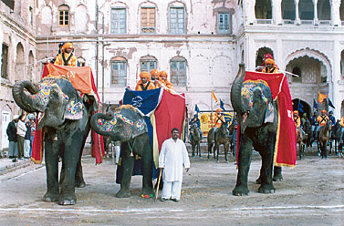
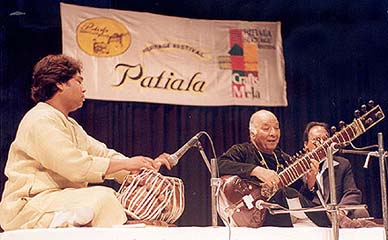

Patiala Heritage Festival
If one talks about Patiala, it becomes imperative to talk about the culture fairs and festivals of Patiala. It has always been a land of celebration which appreciates the uniqueness of the region with its own brand of festivals, fairs and activities. A perfect mode of entertainment, the festivals prove to be the meeting ground for tourists, citizens and officials and provide cause of happiness to one and all.
One of the most important and enthusiastically celebrated festivals in Patiala is the Patiala Heritage Festival. It is an ode to the heritage of Patiala and its rich tradition and history.
Origin And Objective of Patiala Heritage Festival
The Patiala Heritage Festival is a 10 day gala affair that was started in the year 2003. It is organized every year in the month of February to celebrate the culture of the city of Patiala. The objective of the festival is to savor and exhibit the rich culture of Patiala and portray the heritage of the city.
Organizers of Patiala Heritage Festival
The Patiala Heritage Festival is the brainchild of Patiala Heritage Society. The festival is organized by the Patiala Heritage Society in association with National Trust for Art and Culture Heritage (INTACH) every year. The aim of Patiala Heritage Society is to preserve and restore Patiala City's heritage and the festival is a big step towards that direction.
-
Events in Patiala Heritage Festival
The Patiala Heritage Festival is an occassion to celebrate the culture and heritage of Patiala. A number of events such as music, sports, dance etc are organized to entertain and educate people.
-
The Crafts Mela in Patiala Heritage Festival
The famous and renowned Art Gallery in the Sheesh Mahal plays host to the crafts mela during the festival. It is a gala affair for craftsmen and admirers alike. Great variety of crafts that include textiles pottery, jewelries, furniture and mesmerizing handicrafts from all parts of Punjab are on display during the mela. It seems like beauty and history descend at one place during the festival. Something which will keep the spectators and buyers spellbound.
-
Music and Dance Events in the Patiala Heritage Festival
There is something for everybody in the festival. The festival is a treat for the music lovers and admirers of dance. Witnessing some of the best music in India is a chance nobody would want to miss. The music concerts are a great hit among the people and it draws musician from foreign shores as well. Fine exponents of Indian Classical music display their talent on vocals as well as instruments. Various singing and music styles of Gharanas prove to be a draw for the musically inclined.
Apart from the musical events, dance concerts are also held and are an equally popular affair. The courtyard of the Darbar Hall provides a perfect setting for the dance events.
-
Other Events in the Patiala Heritage Festival
The festival is a perfect opportunity to spend exciting and interesting time. The sheer variety of exhibitions and events on display compels one to mark their presence in the festival. Painting exhibitions, cricket matches, polo matches, operas, fashion shows, plays , equestrian sports, golf events are some events that can be enjoyed during the festival.
The Patiala Heritage Festival is a wonderful initiative to celebrate and promote the culture and art of Patiala. This unique festival has high entertainment quotient and provides a platform for artists to showcase their talents in front of the admirers. A great festival in a great town.